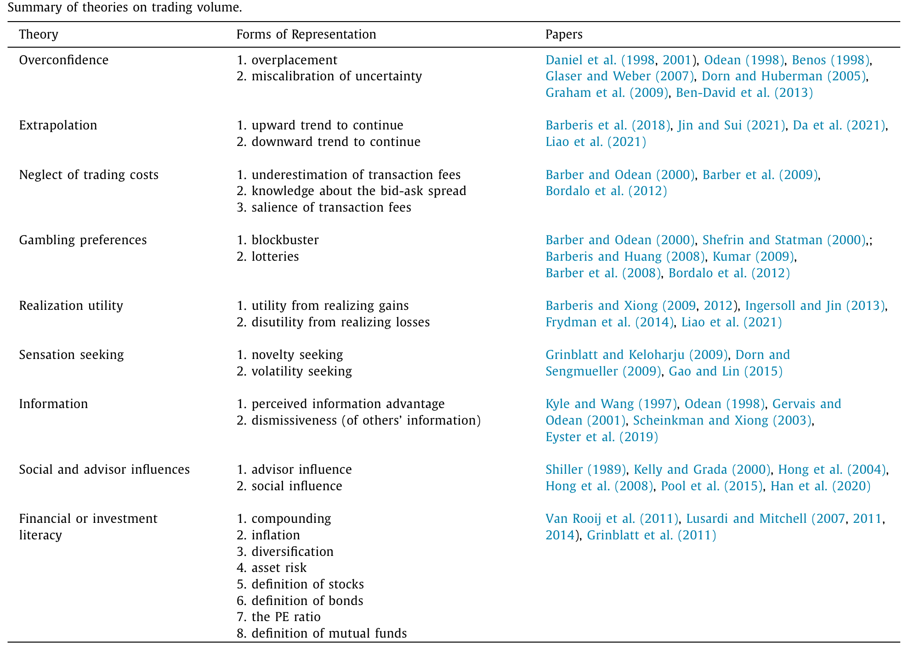
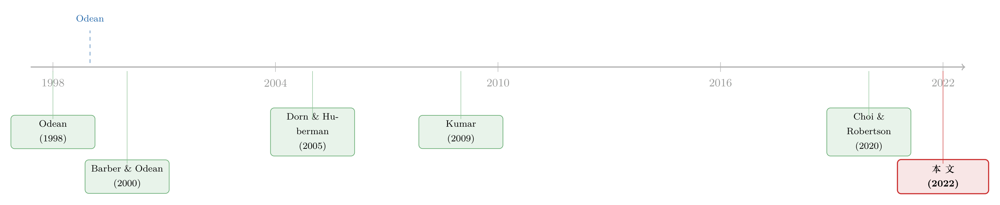

问卷会撒谎，交易不会：怎样在「偏差动物园」里抓出真凶
本文读的是 Liu, Peng, Xiong & Xiong (2022, Journal of Financial Economics)：行为金融学太成功了，以至于对同一个异象，往往同时站着六七种「看上去都对」的偏差。作者提出一个新办法——把问卷答案放在回归的右边、把真实交易放在左边——既能做偏差之间的「赛马」，又能免疫问卷特有的措辞偏差。用一份覆盖上万名中国散户的问卷，他们发现：在解释过度交易上，真正胜出的是赌博偏好与感知信息优势，尽管这两者在问卷的「支持率」排名里并不靠前。
1 一个被「成功」逼出来的尴尬
过去几十年，行为经济学几乎是凯歌高奏。它从心理学里借来一个又一个敏锐的洞见，去解释个体金融决策里的种种反常：过度交易、处置效应、买彩票式的股票、追涨杀跌……几乎每一个谜题，都被成功地「行为化」了。
可成功本身，却酿出了一个新麻烦。
问题在于：对同一个异象，往往不止一种偏差能解释它，而且不同异象召唤出的解释还各不相同。于是行为金融学渐渐养出了一座「偏差动物园」（bias zoo）——笼子里关着过度自信、外推、处置效应、赌博偏好、感觉寻求、社会互动、低金融素养……每一只看上去都活灵活现，每一只都声称自己能解释你眼前这桩反常。
这并不让人安心。定量地看，这些偏差不太可能同等重要；定性地看，一个看似相关的偏差，很可能只是另一个更根本偏差的「外在表现」。如果行为金融学终有一天要走向一个统一框架——用一小撮偏差去解释一大片现象——那它就必须先把这座动物园里的猛兽数清、排序、归并。
熟悉资产定价的人会心一笑：这不就是「因子动物园」（factor zoo）在行为侧的孪生兄弟吗？（关于因子动物园是怎么冒出来的，可参见《弱替代：因子动物园是从哪里冒出来的？》。）因子那边的人想的是怎么把几百个因子收缩成几个；偏差这边的人想的，是怎么从一堆「都对」的故事里，挑出真正起作用的那一两个。
本文，就是想给这件事提供一把新尺子。
2 过度交易之谜：六七个嫌疑人，挤在同一个案发现场
要驯服动物园，得先选一个具体的「案发现场」。作者挑的是经典的「过度交易之谜」（excessive trading puzzle）。
这个谜由 Odean (1999) 和 Barber & Odean (2000) 在美国散户身上最早记录，后来被发现几乎遍布所有市场。它有三个稳健的事实：(1) 散户在扣费前就跑输市场指数；(2) 交易成本让他们的业绩雪上加霜；(3) 交易越频繁的人，表现越差。
既然交易明明亏钱，人为什么还要拼命交易？文献给出的解释，多得能列一张表：过度自信、处置效应（实现效用）、赌博偏好、感觉寻求、社会互动、低金融素养，再加上组合再平衡、流动性需求这些标准动机。这就是一个教科书级别的偏差动物园——至今没人说得清，到底哪一只才是过度交易的主谋。

Table 1
作者把这些「嫌疑人」连同它们的文献出处，整整齐齐地列在了一张表里（如表 1 所示）。注意一个细节：很多动机本身还分好几「种形态」。比如过度自信至少有三副面孔——过度自我定位（overplacement，觉得自己比别人强）、校准失当（miscalibration，对自己的判断过于笃定）、以及感知信息优势（perceived information advantage，相信自己掌握了别人没有的信息）。这个区分，在后文里会成为故事的题眼。
中国市场是个绝佳的「案发现场」。截至 2018 年底，中国股市已是全球第二大市场，而它最刺眼的特征，正是 Allen et al. (2020) 所说的「低收益与高换手并存」——其中 80% 以上的成交量来自散户。要研究过度交易，没有比这更鲜活的样本了。
3 两条老路，各有各的死角
抓真凶，过去有两条路，但都走不通。
第一条路：只用观测数据。 这是金融实证的主流。可问题在于，那些偏差「按设计」就是要对同一个异象给出相似乃至相同的预测。你想用交易数据把它们区分开，常常发现关键矩（moments）根本没有足够的分辨力。有些偏差或许在更微妙的维度上有独特预测，但要检验它，又往往需要难以采集的特殊数据。更别说要横向比较它们的相对重要性了——那需要在同一个样本里同时构造出所有偏差的代理变量，几乎不可能。
第二条路：只用问卷。 Choi & Robertson (2020) 走的就是这条路：直接设计问卷，把一长串可能影响投资决策的机制——从预期、风险担忧到各种偏差——一股脑问给受访者，再按回答给它们排序。这办法很有吸引力，因为它天然就能把一堆机制放到一起比。
可问卷有它的原罪：主观。受访者可能不如实作答；即便如实，回答也是带噪声的，还会被问题的措辞和框架带偏（Bertrand & Mullainathan, 2001）。一个被问得「不讨喜」的偏差，可能仅仅因为措辞，就在排名里被系统性地压低——这种问题特有的偏差（question-specific bias）会扭曲排序，把人引向错误的结论。
这里要分清两件事：用问卷做因变量和做自变量。如果一份问卷同时充当回归两边——既问「你交易多频繁」，又问「你有多过度自信」——那么两边的测量误差很可能相关，OLS 系数会被严重污染。这正是本文想绕开的雷区。
接着，一个自然的问题是：能不能取两条路之长，避两条路之短？
4 真正关键的一步：把问卷放右边，把交易放左边
本文的核心，是一个看似朴素、却极其关键的换位——
用主观的问卷答案，去解释客观的真实交易行为。
具体说，作者先用问卷向一池子投资者采集他们的交易动机，再把这些动机的解释力，放到一个标准线性模型里去比。设投资者 i 的换手率为 y，一组交易动机为 x_1, …, x_K：
关键就在那个波浪号。问卷只能给出带噪声的测量
$$\tilde{x}_{ik} = x_{ik} + u_{ik}$$
其中 u_ik 是问卷引入的测量误差。而作者的排序逻辑，不是看 x̃ 本身的大小（即不是看「有多少人同意这个动机」），而是看它对真实换手率的横截面解释力 {β_k}。换句话说：很多人可能都同意某个动机，但只有当我们同时观察到这些人确实交易得更多，才敢确认它的相关性。
这一步换位，一口气化解了两条老路的死角。让我们一步步看为什么。
第一重好处：因变量直接来自交易，避开了「自报偏差」。 假设我们偷懒，用问卷自报的换手率 ỹ 代替真实换手率：
$$\tilde{y}_i = y_i + \delta_i$$
当 δ_i 是白噪声、且与 x_ik 无关时，OLS 不会有偏。可正如 Bertrand & Mullainathan (2001) 指出的，一旦 δ_i 与 x_ik 相关——这极可能发生——系数就会被严重扭曲。举个直觉例子：过度自信的人或许更难回忆起过去糟糕的交易经历，导致自报换手率被低估（δ_i 为负）；如果再拿过度自信当解释变量 x_k，由于 x_k 与 δ 负相关，系数 β_k 会被向下大幅拉偏。而本文直接用交易数据里的真实 y，这个雷就拆掉了。
第二重好处，也是全文最妙的一招：问题特有的偏差，不会污染系数。 把测量误差再拆一层：
$$u_{ik} = u_k + \eta_{ik}, \qquad u_k \neq 0$$
这里 u_k 是所有受访者共有的、针对动机 k 的系统性偏差（比如这个问题问得不好，普遍招致误解或反感），而 η_ik 是纯白噪声。这个共有的 u_k，会拉低 x̃_ik 的均值，从而在「纯问卷排序」里扭曲该动机的位次。但在横截面回归 (1) 里——
u_k 是个对所有人都一样的常数，于是它整个被截距 β_0 吸收掉了，丝毫不影响 β_k 的估计。
这就是题眼：一个问题措辞上的共同偏向，会扭曲它在问卷里的排名，却动不了它在回归里的横截面解释力。 只要这个偏向是所有受访者共有的、不与你没控制住的个体特征互动，OLS 就对它免疫。至于个体层面、且在某些人群里更普遍的偏差，作者则用一长串人口统计变量去控制。
那白噪声 η_ik 呢？它带来的是经典的衰减偏差（attenuation bias），把系数往零的方向压。这意味着：赛马里跑不出显著的因子，可能只是噪声太大；但反过来——任何能从这种噪声中存活、依然显著的因子，在现实中只会更重要，不会更不重要。 这给后文的「胜出者」加了一道安全垫。
（顺带一提，「该信问卷还是该信价格」本身就是一桩公案；从市场价格里反推信念的另一条路，可参见《想知道投资者信什么？去问价格，别问问卷》。本文的态度更折中：问卷不是不能用，而是得换个用法。）
5 数据：一万份问卷，嫁接到深交所的账户流水上
识别讲清楚了，数据就顺理成章。
作者在 2018 年 9 月做了一次覆盖全国的问卷，受访者按地区和券商随机化，最终收回逾 10,000 份有效回答。问卷分四大部分：8 道金融素养题（含经典的「big three」）、收益预期、以及——最重要的——一份穷尽式的行为偏差与交易动机清单。
为了把测量误差压到最小，问卷在设计上下了不少功夫：用无行话（jargon-free）的表述、在中国版「众包平台」上做过多轮试点；所有题目都是带标准化选项的多选题，选项里专门留了「不知道」和「拒绝回答」，避免逼人在没态度时硬选；又因为是线上匿名作答，社会期望偏差（social desirability）也被削弱。
隐含在整个设计里的一个关键假设是：交易动机随时间稳定，并能解释交易行为的横截面差异。 然后，作者把这些问卷答案，与来自深圳证券交易所的账户级交易数据逐一匹配——这才有了回归 (1) 左边那个真实的、不掺水的换手率。
6 先验证：人们「说的」和「做的」对不对得上？
在抓真凶之前，作者先做了一件让人安心的事：检验问卷答案到底靠不靠谱。
逻辑很简单——如果问卷测出的动机是真的，那它应该能预测对应的、有针对性的交易模式。对于四个能直接和交易数据对上的动机，结果相当漂亮：
- 问卷测出的赌博偏好，能解释买入彩票型股票的倾向；
- 问卷测出的外推（extrapolation），能解释买入近期上涨股票的倾向；
- 问卷测出的风险厌恶，能解释持有高波动股票的多寡；
- 问卷里的收益预期，能解释持仓的变动。
也就是说，「说的」和「做的」之间，存在稳健的统计一致性。这不仅给本文后面的赛马打了底，也顺手给「单凭问卷检验金融理论」的一大批研究，提供了一次难得的外部验证。
7 赛马：谁才是真凶？
铺垫到此，重头戏登场。作者分两步走。
第一步，逐个回归。 把换手率分别对每一个交易动机单独回归。结果毫不意外——过去文献提出的许多解释，在本样本里也都成立。动物园里几乎每只猛兽，单独看都「显著」。
第二步，全部塞进同一个回归做赛马。 这一步，才是驯服动物园的关键。当所有动机被迫同台竞技，故事出现了三重反转。
反转一：两个动机脱颖而出——赌博偏好与感知信息优势。 它们的解释力相当可观：样本里月度换手率的标准差是 123%，而赌博偏好能解释其中高达 21%、感知信息优势能解释高达 24%。换算成真金白银，二者分别对应 0.6% 和 0.7% 的年化交易费——后果一点都不轻。
反转二：好几个「单看很猛」的动机，一进赛马就垮了。 最典型的是感觉寻求。作者构造了两个度量——新奇寻求与波动寻求——单变量回归里两者都显著为正；可一放进赛马，解释力就被大幅削平。相比之下，赌博偏好和感知信息优势的解释力，在各种设定下都稳如磐石。这恰恰印证了第 4 节的担忧：在没有赛马的情况下，某个动机的显著效应，可能只是另一个动机的影子。
反转三，也是最反直觉的：胜出者，在问卷「支持率」里并不靠前。 尽管赌博偏好和感知信息优势的横截面解释力最强，它们却分别只被 37% 和 18% 的受访者支持，排名远在好几个动机之后。
这正是全文最想敲打的那块钢板：对问卷答案而言，「横截面解释力」和「按支持率的简单排名」是两回事。 后者会被问题特有的偏差扭曲，前者不会。如果你只看「有多少人同意」，你会抓错凶手。
那些「意外」的零结果，同样耐人寻味。 与流行叙事相反，低金融素养、社会互动、忽视交易成本，在本样本里都没有推高交易。其中最一致也最出人意料的，是「忽视交易成本」：作者构造了三个不同度量，没有一个如预期般解释换手率。更狠的是，他们还做了个随机实验——给一半受访者一个「助推」（nudge），让他们读一段配图、讲明过度交易如何因交易成本侵蚀业绩。结果呢？处理组在「助推」后的换手率，与对照组没有任何差别。这让「忽视交易成本驱动过度交易」这一说法，进一步打上了问号。
最后，作者还把问卷度量和交易度量做了对比：他们为赌博偏好同时造了一个「交易型」度量和一个「问卷型」度量。交易型度量对换手率的解释力更强，但它也和好几个其他动机纠缠在一起；问卷型度量噪声更大、因而更弱，但它能干净地锁定单一动机。一句话总结这桩权衡——精心设计的问卷题能精准瞄准一个动机而不被别的动机污染，代价是个体层面噪声大；交易度量噪声小，却可能同时裹挟多个动机。 两条路各有利弊，没有免费的午餐。
8 文献脉络
把这条线索拉直，能看得更清楚。
过度交易之谜的源头，是 Odean (1998) 给出的过度自信理论，和 Odean (1999)、Barber & Odean (2000) 的实证三事实。此后，动物园里不断添丁：Kumar (2009) 把赌博偏好请进场，证明散户里谁在「赌」。

方法论上，「问卷 + 观测数据」并非本文首创。Dorn & Huberman (2005)、Glaser & Weber (2007)、Dorn & Sengmueller (2009) 早已把问卷和交易数据结合起来研究过度交易——但它们各自只盯着一两个偏差（风险厌恶与感知知识、过度自信的两种形态、感觉寻求）。本文真正的推进，是把这个思路扩展成一场穷尽式的赛马：没有赛马，一个动机的显著效应就可能只是别的动机的化身（感觉寻求就是活生生的例子）。
另一边，纯问卷路线的集大成者是 Choi & Robertson (2020)：他们也用问卷去横向比较一大堆潜在因素。本文与之最为接近，却换了框架——把问卷答案接到真实交易上，既给问卷答案做了外部验证，又免疫了那种会扭曲简单排名的问题特有偏差。这，就是本文在这条脉络上的坐标。
评论与延伸（Q&A + 研究方向）
(a) 几个可能的疑问
Q：「问题特有偏差被截距吸收」这个论证，真的站得住吗？
站得住，但有边界条件。它成立的前提是：该偏差对所有受访者是同一个常数
u_k，且不与未被控制的个体特征互动。一旦偏差是异质的——比如某类人群对某个措辞格外敏感——它就不再被截距整体吸收，而会渗进系数。作者的应对是控制一长串人口统计变量，但这终究是「控制能控制的」，无法证明残余的异质偏差为零。
Q：胜出的是「感知信息优势」，而不是笼统的「过度自信」，这个区分重要吗？
非常重要，甚至是全文最有信息量的一笔。过度自信至少有三副面孔——过度自我定位、校准失当、感知信息优势。赛马筛掉了前两者，独独留下「相信自己掌握了别人没有的信息」。这把一个模糊的大标签，锐化成了一个可检验的具体机制：人们交易，是因为自以为有信息优势，而非泛泛的「觉得自己行」。
Q：赌博偏好和感知信息优势会不会其实是同一回事？
作者把它们放进同一场赛马，二者的解释力都稳健存活，说明它们各自携带了独立的信息、并非互相的影子。这正是赛马设计的价值所在——它能区分「真凶」和「同案者的倒影」。
Q：「忽视交易成本」的零结果可信吗？毕竟散户出了名地不算账。
这是全文最反直觉、也证据最厚的一处。作者不仅用了三个不同度量都得到零，还补了一个随机「助推」实验：读完讲解交易成本危害的图文后，处理组换手率纹丝不动。这说明在中国散户的过度交易里，「没算清成本」恐怕不是主因——他们交易，更像是为了「信息优势」和「赌一把」，而不是因为不知道有手续费。
Q：用中国散户得到的结论，能外推到美国或其他市场吗？
要小心。中国市场散户占比极高、投机氛围浓，赌博偏好和感知信息优势的主导地位，可能部分是这个生态的产物。本文的方法（把问卷放右、交易放左做赛马）是普适的；但哪只猛兽是主谋，很可能因市场而异。把同一套问卷搬到不同市场重做，本身就是值得做的事。
Q：这套办法和「因子动物园」的收缩方法是一回事吗？
精神相通，工具不同。因子那边多用统计收缩（如收缩横截面、PCA）从协方差结构里压维度；本文则借助外生于交易的问卷信息来给偏差排序。一个靠数据自身的几何，一个靠引入新的测量维度——后者的好处是能讲出经济机制，代价是要承担问卷的测量噪声。
(b) 几个可能的研究问题与提案
1. 把这套「问卷 × 交易」赛马搬到债券散户身上。
【经济故事】过度交易之谜几乎都在股票上做。但散户也在交易公司债、可转债，且债券的流动性、信息结构与股票截然不同——「感知信息优势」在一个更不透明、做市商主导的市场里，可能扮演完全不同的角色。 【可行性】中：识别框架可直接照搬，难点在数据。需要一份能匹配到账户级债券交易的散户问卷，且债券散户样本通常偏薄。在零售债券较活跃的市场（如中国交易所债市）或许可行。
2. 交易动机真的「随时间稳定」吗？检验本文的核心假设。
【经济故事】全文识别都押在「动机持久、能解释横截面差异」这个假设上。但赌博偏好会不会随牛熊切换？感知信息优势会不会在一次大亏之后被「教育」掉？这关系到结论是结构性的还是周期性的。 【可行性】高：对同一批受访者做面板式重复问卷（如隔一两年再问一次），看动机的时序稳定性，并把动机变化与中间的市场经历、个人盈亏挂钩。识别清晰，主要成本是追踪样本。
3. 给「感知信息优势」找一个外生冲击。
【经济故事】本文是横截面相关，严格说不是因果。如果能找到一个外生地改变投资者「自以为有信息」的冲击——比如某个荐股社群的突然关停、或某类「内幕感」信息渠道的监管整顿——就能把相关推向因果。 【可行性】中：需要一个干净的准自然实验和事件窗口内的账户交易数据。这类冲击不易现成，但监管整顿在中国并不罕见，值得蹲守。
4. 外资 vs. 本土散户：同一套动机问卷，两类持有人。
【经济故事】随着市场开放，外资持有人与本土散户在同一个市场里交易同一批股票。他们的交易动机分布是否系统性不同？外资是否更少「赌」、更多「再平衡」？这对理解开放如何改变市场质量很有价值。 【可行性】低到中：难点是对外资做可匹配交易数据的问卷几乎不可能。退一步，可用交易型代理（换手、彩票股暴露）在两类持有人间做对比，牺牲一点机制的纯净度换取可得性。
我的判断
这篇文章的贡献，与其说在「结论」，不如说在「方法」。把问卷放回归右边、把客观结果放左边，从而既能做穷尽式赛马、又能让问题特有偏差被截距吸收——这是一个朴素却锋利的识别洞见，值得任何想用问卷做实证的人收进工具箱。它把行为金融学从「翻心理学课本挑偏差」的旧批评（Fama, 1998）里，往前推了实打实的一步。
但要诚实地说，它的识别仍是横截面相关，而非因果。「感知信息优势越强、交易越多」完全可能由某个未观测的第三变量（比如某种总体的过度自信特质）同时驱动——作者控制人口统计变量、并论证共同偏差被截距吸收，已经做得很扎实，但这终究不能替代一个外生冲击。此外，「动机随时间稳定」这个核心假设，在一个出了名情绪化的散户市场里，本身就值得被单独检验一次。
我最想看到的后续，是两件事：其一，把同一套问卷搬到不同市场、不同时点重做，看赌博偏好与感知信息优势的主导地位是中国特色还是普遍规律；其二，给那个胜出的「感知信息优势」找一个外生冲击，把这篇优雅的相关性研究，钉成一篇因果研究。果真如此，这座偏差动物园，才算被真正驯服了一角。
参考文献
- Allen, F., Qian, J., Shan, C., Zhu, J. (2020). Dissecting the long-term performance of the Chinese stock market. Working paper.
- Barber, B.M., Odean, T. (2000). Trading is hazardous to your wealth: the common stock investment performance of individual investors. Journal of Finance 55(2), 773–806.
- Bertrand, M., Mullainathan, S. (2001). Do people mean what they say? Implications for subjective survey data. American Economic Review 91(2), 67–72.
- Choi, J.J., Robertson, A.Z. (2020). What matters to individual investors? Evidence from the horse's mouth. Journal of Finance 75(4), 1965–2020.
- Dorn, D., Huberman, G. (2005). Talk and action: what individual investors say and what they do. Review of Finance 9(4), 437–481.
- Dorn, D., Sengmueller, P. (2009). Trading as entertainment? Management Science 55(4), 591–603.
- Fama, E.F. (1998). Market efficiency, long-term returns, and behavioral finance. Journal of Financial Economics 49(3), 283–306.
- Glaser, M., Weber, M. (2007). Overconfidence and trading volume. Geneva Risk and Insurance Review 32, 1–36.
- Kumar, A. (2009). Who gambles in the stock market? Journal of Finance 64(4), 1889–1933.
- Liu, H., Peng, C., Xiong, W.A., Xiong, W. (2022). Taming the bias zoo. Journal of Financial Economics 143(2), 716–741.
- Odean, T. (1998). Volume, volatility, price, and profit when all traders are above average. Journal of Finance 53(6), 1887–1934.
- Odean, T. (1999). Do investors trade too much? American Economic Review 89(5), 1279–1298.